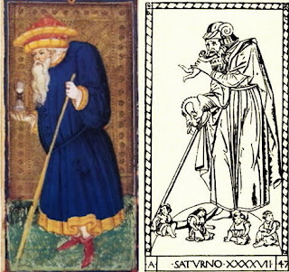

Hermit
In the early days, the Hermit card was neither called the Hermit, nor the card before the Wheel in the sequence, nor did it have a lantern. It was "the Old Man" or "the Hunchback", invariably just after the Wheel (see the lists at the beginning of my previous post, on Justice). It also showed an old man holding an hourglass, rather than the lantern that came later.
The earliest surviving card is in the Visconti-Sforza deck of Milan in the 1450s. The Old Man is richly attired and with a cane. This particular image, in a luxury deck surely commissioned by Milan's new ruler, Francesco Sforza, may well commemorate the former duke, the isolative Filippo Maria Visconti, who died in 1447. No thanks to him, his illegitimate daughter was now Duchess of Milan, even if her title went unrecognized except by Millan's allies after the "peace of Lodi" in 1453; its other major signatories were Florence and Venice, both republics. Still, Filippo was her children's grandfather.
I see a certain resemblance of man and cane on the card to a c. 1465 illustration of the god Saturn in the so-called "tarot of Mantegna," a set of 50 cards on mythological themes from Ferrara or Venice. Saturn was always represented as an old man, usually with a scythe and shown devouring his children.
Not only was the equivalence Chronos (Time) = Kronos (Saturn) made since antiquity, but the act of eating his progeny was compared to the action of Time, each moment devouring the one before it. The serpent or dragon biting its tail was a traditional symbol of time, both for devouring itself and suggesting a cycle, as for Plato time played itself out in cycles. Its circular shape, without end or beginning, also suggests Eternity, of which time was the "moving image", as Plato described it.

Comparison of some early cards with the Florentine illustrations of Petrarch's "Triumph of Time" show clear associations: each has a winged old man on crutches, sometimes with an hourglass, sometimes a deer, the type of animal that drove the cart he was standing on. (Above is the relevant detail of Jacapo Sellaio, 1480s Florence, plus the Rosenwald image, after 1507, and two minchiate versions, 17th century).
Petrarch's poem Il Trionfi (The Triumphs) had six parts, each a different triumph over what had been victorious in the previous section of the poem. All of them, including this one, correspond to individual tarot trump cards (see my posts here on Love, Chariot, Death, Judgment and World). "Trump" is in fact an Anglicization of the early word for the one suit that triumphed over the rest, the cards of which in the 15th century were called "triumphs" rather than "tarots", "tarocchi", or, after 1870, "major arcana."
The Petrarchan "Time," which in the end will triumph over any Fame a person might have earned, is not, however, the same in meaning as the tarot card. In Petrarch, Time is next to last of the six. After death, all that is left of a person in this world is his fame, or at least his reputation, good or bad. Over time, sooner or later, even that fades from memory. What triumphs over time, for Petrarch, is Eternity, which is not subject to decay; in the Judeo-Christian world-view, it is associated with the Last Judgment.
The tarot subject, however, is before Death in the sequence. It can be Time in the sense of a person's allotted time on earth, of which an old man approaching death is a fitting symbol. In these early versions, he has wings or holds an hour-glass to remind us of how limited our time on earth is compared with eternity. Sometimes he had wings, to convey that "time flies" and should be used wisely.
The deer that draws his cart in the Petrarch illustrations and sometimes appeared on the card symbolically meant "thirst for God," following the imagery of the 42nd Psalm (41st in the Roman Catholic Bible), which medieval illuminators illustrated with a deer bending down to drink from a pool of water. Similarly, old people often found life a burden and took refuge in contemplation of the divine world and their hope soon to join it.
From Time to Hermit
A French card of c. 1500 (at left) still has him with the hourglass. But at some point in the 16th century, perhaps starting in France, the hourglass changed to a lantern, as seen in the Catelin Geoffroy of 1557 Lyon. The symbolism changed accordingly. In the Geoffroy it is probably a monk, who appears to be knocking on a door. He holds his lamp so that he can see where he is going, and he is in front of what seems to be a door; I think we can imagine it the door to heaven.
The commentary on the tarot by Piscina, c. 1565, connects the card with long life and time as much as religous hermits. He says:
Then the Old Hunchback comes, charged with troubles and thoughts, and he triumphs over and surpasses Fortune. He represents a prudent counsel, with which you can triumph over any Fortune.On the one hand:
in him there is something that is more than human, in as much as he is the triumphator over Fortune, which is earthly and considered to be almost nothing by the prudent.This disdain for the earthly is what characterizes the person whose main concern is to be close to God.

If you want to do something well, do it twice. But since this cannot always be done by everybody, one should follow the advice and opinion of old and mature men, who, for the length of their years, most of the time will have an experience with that thing.There is a famous painting by Titian from this period, the "Allegory of Time Governed by Prudence." Beneath the figures is written, in Latin, "From the experience of the past, the present acts prudently, lest it spoil future action." Correspondingly, the past is an old man looking back, the future a young man looking forward, and the present a middle-aged man looking neither forward nor back. This again connects Time with the prudence of long experience.
The Anonymous Discourse, of the same time period as Piscana's, offers the following:
This one emphasizes that age teaches the vanity of worldly things, as the life of a simple monk, and even more a hermit, serves as a living example.The Hunchback, who is none other than Time, demonstrates that all these things are vain and transitory. Therefore loving and desiring them so intensely, thinking of nothing else, is the greatest foolishness, because in a short time Old Age comes together with all its miseries, then people begin to understand the deceptions of the murderous World.
The Noblet of 1660s Paris (middle above, and as restored by Flornoy at left below) makes the change in emphasis explicit; now he is called "L'Eremite", the Hermit Moreover, he holds his lamp up near his eyes, where it would blind him and so make it difficult to see what is ahead of him (I owe this point to Christine Leveille). He may be illuminating the path for others, or making himself visible as the leader. In Marseille of around 1700, there is even a little sun peeking out from his robe. With his lamp and inner light, he is a source of illumination, at least to those on our side of his cape: it hangs from his arm in a way that the light on the other side from us would not illuminate the way for anyone on that side. How did he happen to have such a huge cape? One possibility: At the Egyptian temple of Dendera, on the banks of the Nile, there is a similar portrayal, this one of a priest. It is one of several parallels in the Noblet imagery to figures in that temple (see my blog at http://egyptinthetarot.blogspot.com/2017/09/3-egypt-in-pre-de-gebelin-tarot.html).
From Marseille c. 1700 (middle above) to the Conver card of 1760 in the same city, there is another change. the spelling changes from "l'Ermite" to "l'Hermite," which while acceptable in French is not the usual 18th century spelling.(In contrast, English by the mid-17th century had chosen the spelling with an "h", as opposed to without it; both been customary up til then.) This change seems deliberate. Possible it is to suggest the "Hermetic," that is, a follower of Hermes Trismegistus. That would suggest, based on the Corpus Hermeticum, someone passing down divine teachings, by means of discourse originating from the mind of God (Nous) and accompanied by visionary experiences. Something of the same might be suggested by what appears to be a three-tiered pack on the Old Man's back, one each for the three parts of the world Trismegistus is declared majestic in by the Emerald Tablet: by alchemy for the elemental world, astrology for the celestial world, and theurgy. for the divine world.
For Court de Gebelin in 1781 Paris, the card was reminiscent of Diogenes, the Greek sage famous for carrying a lantern in the middle of the day, seeking "a man," usually interpreted as meaning "an honest man." Despite the Greek meaning, he calls the card "this Egyptian depiction." Since Diogenes was of the time of Alexander the Great, as Gebelin would have known, by "Egyptian", Gebelin would apparently have had in mind Egypt after its conquest by Alexander.
{kind=link}
Etteilla, despite his claim to be "restoring" the tarot's original images from ancient Egypt, portrayed his Hermit as a Catholic monk of his own day. His attitude toward monks and priests is made clear by the keyword "Traitre" on the card. Etteilla, a supporter of the French Revolution, probably regarded the Church as the enemy of Liberty, Equality, and Fraternity.
Eliphas Levi, himself a follower of Hermetic philosophy, was quick to pick up on the association between "Hermite" and "Hermes." In volume 1, chapter 9, of his first book of occultism, Levi said:
The initiate is he who possesses the lamp of Trismegistus, the mantle of Apollonius, and the staff of the patriarchs. Trismegistus's lamp is reason enlightened by science, Apollonius's mantle is full and whole self-possession, which isolates the sage from the instinctive currents, and the staff of the patriarchs is the assistance of the occult and perpetual forces of nature.By "inititatve" means one in possession of the secrets, not the candidate for initiation, whose task is to learn from the initiate. By "science" he means the occult wisdom. Levi does not mention the tarot Hermit explicitly, but it is clear that he is referring to it.
This emphasis on the Hermit as an initiate suggests his role as leading the seekers of light out of the darkness of the world. This was an ancient goal of initiations, most famously that of Eleusis, from which one was said to emerge with no more fear of death. There were also the Mysteries of Dionysus, in which the initiate, the bacchant or bacchante, entered into in ecstatic union with their god. There appear to have been initiations on precisely this theme in which the candidate either had his or her eyes covered (as at left from a Roman sarcophagus), or the initiation was conducted at night or underground. In the latter case it would make sense for the initiation leader to hold a lantern by which the candidate could see what was depicted on the walls.
...he is called the Hermit or the Monk, but his true name is Prudence, thus completing the four cardinal virteus,
Levi's follower Paul Christian developed the theme of the the tarot sequence as initiation in his book History of Magic, which recounted an initiation trough underground passageways beneath the Great Pyramid at Giza, in which the candidate would encounter frightening trials and then receive instruction at each of 22 frescoes on the walls. The initiation masters themselves would carry torches, as shown in a dramatic illustration in that section of the book.
For the instruction accompanying the fresco of the Hermit, Christian used Levi's remarks in volume 2 rather than those of volume 1. The figure represents Prudence "gained by experience in the labors of life." The lantern is "the light of the mind, which should illuminate the past, the present, and the future." For its part the cloak that "half-conceals it [the lantern] signifies discretion." It is not that pearls must not be thrown before swine, as we might expect of Hermetic secrets, but rather that "Circumspection [i.e. wariness] allows him to avoid reefs or pitfalls and to be forewarned of treachery." In other words, it is secrecy that from those who do not need to know one's plans, to avoid such pitfalls as treachery. Finally, the staff "symbolizes the support given by prudence to the man who dos not reveal his purpose." He does not say what that support might be; it is merely further emphasis on the importance of secrecy. It seems to me that if a secret is kept from too many people, it can also prevent one from learning things from others that it might be prudent to know. But Christian is not concerned about that. He has the tarot, which reveals all that is needed.
A. E. Waite, in designing his card, distanced himself from both Christian and Wirth. Of the cloak he said:
It did not refer to the intended concealment of the Instituted Mysteries, much less of their substitutes, but--like the card itself--to the truth that the Divine Mysteries secure their own protection from those who are unprepared.Likewise he ridiculed the idea that the adept's "personal magnetism" (Levi's actual phrase was "magnetic fluid") needs to be protected by a cloak. What remains in the card is
...that which blends the idea of the Ancient of Days with the Light of the World. ... His beacon indicates that "Where I am, there you may be."In other words, his light shines to guide the initiate to the enlightened state that the Hermit already possesses within himself.
Paul Foster Case followed Waite in making the light shine on both sides of the Hermit. He also emphasized the contrast between the small ligh and the large darkness. His hat is in the shape of a Yod, the 10th letter of the Hebrew alphabet and so associated with the Hermit as the 10th in the sequence, starting with the Fool. Yod is also the first letter of the Tetragrammaton. Note that Wirth has a different letter, Heh, which is the 9th letter. For both Waite and Case, the Hermit stands on mountain tops; mountain tops are of course one traditional place for sages to go to withdraw from the world. They also symbolize his greater contact with the world above.
The cloak or cape that half-hides the lamp in the Tarot of Marseille and Wirth was not Levi's invention, but already existed in the Marseille version. Moreover, its folds reveal a couple of small suns rising in them, suggesting the Hermit's enlightened state. The point may be that the Sage is not known by a light recognizable by all, but only by those who are in a certain position to see it.
Here the position of the card in the sequence is of some importance. After the Wheel card, when one has been the victim of Fortune and one's own blindness, then one is ready to seek what has escaped one's notice before. I am reminded of Parzival after he has suffered disgrace at the hands of Kundrie at Arthur's court;she laughs at how he was so simple-minded that he squandered his good fortune at being in the presence of the Grail and failed his mission there. The result, as Wolfram von Eschenbach recounts in his version, is that he turns from his former mentor, an accomplished elder knight, and notices an old hermit in the forest, living on roots. Earlier, Parzival would probably have not paid such a figure any mind. But it is from this hermit, who turns out to be a relative, that he learns the secrets of the Grail and what he should have done at the Grail Castle. More generally, it is when the Wheel turns away from the apex of life and towards death that the Hermit, in his simplicity, becomes a figure worth noticing.
The Kabbalists' Sefirotic Tree is of lesser importance here. Papus made one application explicit (it is only implicit in Levi, chiefly in his second book). For him the Hermit represented Yesod, or Foundation, the 9th sefira out of 10. In the Jewish Kabbalah, Yesod is the sefira by which one gains access to the sefiroth above. It is also known as "the Righteous," tzaddik, a word used of those whom the students of Kabbalah considered its masters. He also associated the Hermit with the 9th letter of the Hebrew alphabet, Heh, but he did not associate that letter with anything on the Tree.
The Golden Dawn used the paths between sefiroth reported by Athenaeus Kircher as the basis for their application of the Kabbalah to the card. Where Kircher got them is not clear. Since he refers to Cordovero's Pardes Rimonim (Orchard of Pomegranates) just before he lists the paths, my guess is that he thought he was giving Cordovero's view. But although he does give the paths in the same order as Cordovero, the latter did not assign Hebrew letters to them. That he would have agreed with Kircher is dubious, since Kircher ignores the obvious parallel between 3 horizontals on the Tree to the three "mother" letters, the 7 verticals to the 7 "doubles," and the 12 diagonals to the 12 "simples." Moreover, Cordovero indicates that there was a divergence of opinion among Kabbalists regarding two of the diagonals. He spends one whole section arguing against one of them, the idea that there is more than one path to Malkuth. Kircher's presentation is of that view, probably thinking that it was Cordovero's, and the English occultists followed him. .
For the Golden Dawn, therefore, the Hermit is the path between Chesed, i.e. Loving-Kindness, and Tifereth, i.e. Beauty. It also for them is associated with the 10th letter of the Hebrew Alphabet, Yod. The Llewellyn Encyclopedia says of this path that it:
...represents communication between the Higher Self and the Spiritual Self. Yod means the hand reaching down to show the way to Hidden Knowledge. It is also the word of power that links the Lower Self to the Higher through vibration. ...How that relates to the path between Chesed and Tifereth is not explained. It adds, in the next section, on "card description":
It is the soul which holds in check the passions, although her feet are still planted on earth, and the dark veil still floats about her head and clings around her.This last comes to much the same as what Levi and Papus say, it seems to me. How it relates to the specific path between Chesed and Tifereth is unclear to me; it is true that Chesed is higher than Tifereth, but there are many such combinations, and Tifereth is already quite high.
Jungian Perspectives
Sallie Nichols recasts several of the occultists' favorite themes into psychological terms. She quotes a passage from Jung. Such a figure personifies."the archetype of the spirit,.the prexistent meaning hidden in the chaos of life." Actually, this quote is in the context of discussing the dream of a theology student unknown to Jung, in which the key figures are a "black magician in a white robe" and "a white magician in a black robe." The archetype encompasses both figures, Jung says. In the dream, each is part of a process. The white Magician dicks up the bones of a corpse, which turn into a black horse that runs off into the desert. This is the "descent into darkness," Jung says. The black magician catches the horse and somehow also finds the "keys to the kingdom," but does not know what to do with them and goes to the White Magician for help.
Identifying the Hermit with this dream-figure of a powerful Magus of the Merlin variety, but uniting in himself darkness and light, is an interesting idea. That the tarot figure is a Magus is already implied by Levi when he says the staff is his support in natural forces. That he contains both darkness and light is implied by Wirth's analysis of the positive and negative aspects of the card. For Jung one example is Nietzsche's Zarathustra, who comes into his imagination just as he was thinking God was dead. Instead of philosophy, a poetic figure bubbles forth, one who cannot be taken at face value but rather as a challenge to one's assumptions. Jung adds:
Modern man, in experiencing this archetype, comes to know that most ancient form of thinking as an autonomous activity, whose object he is. Hermes Trismegistus of the Thoth of Hermetic literature, Orpheus, the Poimandres (shepherd of men) and his near relation to Poimen of Hermes, are other formulations of the same experience. If the name "Lucifer" were not prejudicial, it would be a very suitable one for this archetype. But I have been content to call it the archetype of the wise old man, or of meaning. Like all archetypes it has a positive and a negative aspect, though I don't want to go into it here.He refers us to his essay on "the phenomenology of spirit" (in the same volume).
In Nichols' case, the negative side is the sham wisdom-teacher, or the guru who adjusts himself to meet the needs of his disciples' projections, the victim of his own inflations. For his part, Jung reminds us that the archetype is also that of spirit, and there are evil spirits as well as good ones. The evil ones are those that do evil but in a way that challenges the hero--i.e. the ego--to get out of its spiritless condition. An old man steals a cow so that a boy will be blamed and he has to flee. Or he gives orders that would be heartless to follow, later rewarding the hero for his disobedience. In the end he is the good old man, giving moral instruction to the listener of the tale.
This is perhaps why the Hermit historically came after the Wheel of Fortune: it is the downturn of Fortune that leads one to go beyond our previous mode of thinking - or else be doomed to repeat the cycle yet again on the same level.
What Jung adds is a connection to "the archetype of meaning." But what is this "preexistent meaning" he seems to be drawing on the ancients' idea of Providence as directing our lives according its own plan, for our enlightenment in spite of ourselves. "Meaning" then would be that pre-existent plan. In Jungian terms, it is something within us leading us forward despite the limited awareness of our conscious choices.
Modern sensibility understandably balks at such an idea. Jung's disciple Marie-Louise von Franz doesn't make it any easier for us. She says that the animus on the highest level is precisely that which acquaints us with this archetype of meaning:
Finally, in his fourth manifestation, the animus is the incarnation of meaning. On this highest level he becomes,(like the anima) a mediator of the religious experience whereby life acquires new meaning.She gives as an example the inspiring figure of Gandhi, comparable to the anima-figure of Sophia. But we might wonder, is the meaning that Gandhi offers "preexistent", or is his vision of non-violence as a way of life one of his and others' own making, in response to situations to which precisely they did not submit? I find this hard to answer.
Somehow, meaning is a product of both the pre-existent and a person's individuality. Take the meanings of words, or at least the simplest form of the meaning of words: The meaning of the word "brown" is a certain color that appears variously in the world. But is there such a thing? "Brown" is a product of our retinas and brains; what is "in the world" is merely a combination of wave patterns emitted or reflected off surfaces. Even that is due to the nature of our measuring devices, selecting only what they can measure. Meaning is somehow the interaction of us with the world, shining the light of consciousness (the white magician's gift) onto what in large measure remains in darkness (which the black magician brings to the light).
Jung in fact says something similar in his "Psychological Interpretation of the Trinity". He had talked about three stages of consciousness. The first, corresponding to the Father, is the uncritical acceptance of habitual thinking from a tradition. The second, the Son, is that of the winning of autonomy through reason and reflection. The third., the Holy Spirit, is the return of the Father from the standpoint of the Son: that is, again one receives passively. Jung says:
Psychologically speaking, "inspiration" comes from an unconscious function. For the naive-minded minded person the agent of inspiration appears as an "intelligence" correlated with, or even superior to, consciousness, for it often happens that an idea drops in one like a saving deus ex machina.This much lets us know that we are in the sme area as von Franz's "religious experience," just not in relation to a specific person or image. But at this stage it is not simply a matter of taking these experiences at face value, but of engaging with the new perspective from the standpoint of a developed, autonomous ego-consciousness.
It is clear that these changes are not everyday occurrences, but are very fateful transformationns indeed. Usually they have a numinous character, and can take the form of conversions, illuminations, emotional shocks, blows of fate, religious or mystical experiences, or their equivalent.
The numinous character of these experiences is proved by the fact they are overwhelming - an admission that goes against not only our pride, but against our deep-rooted fear that consciousness may perhaps lose its ascendancy, for pride is often only a reaction covering up a secret fear.
This third stage ...means articulating one's ego-consciousness with a superordinate totality, of which one cannot say that it is "I," but which is best visualised as a more comprehensive being, though one should of course keep oneself conscious all the time of the anthropomorphism of such a conception.Having received a solid grounding in habits formed from traditional beliefs (the Emperor/Father), and having achieved a relative autonomy as a rational being in control of his impulses (the Chariot/Son), he now encounters that which is beyond reason and somehow enfuses life with meaning.
While it is the black horse--like the black magician--that brings Beauty (the keys of the kingdom, the anima/animus) to the attention of the Charioteer, it is the charioteer--the white magician, consciousness--that recognizes its divinity, is humbled by it, yet finds meaning in it.
When the occultists allegorized the cloak as that which conserves the Hermit's "magnetic fluid," there is a Jungian way to make that point. Nichols observes that people resist being in car-pools and using mass transit in part because "it is their only chance to be alone." When the mind is not engaged in attending to the car's surroundings, it is free to wander as it will, in a kind of reverie. In this process the will or ego is not the only player; it is then the experience of "the alone with the alone." .